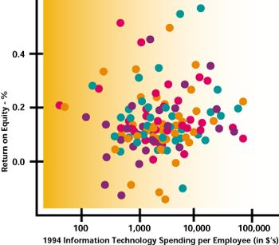
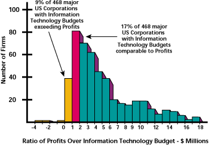
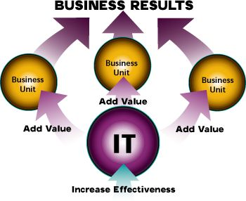
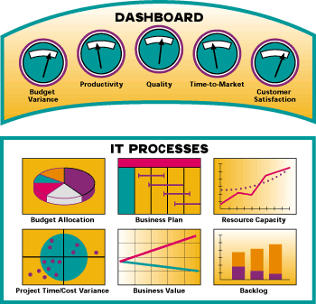

Paul Strassmann
President of the Information Economics Press
Danek Bienkowski
Executive
Vice President
ABT
Corporation
Speaking the Language of Business
by Paul Strassmann and Danek Bienkowski
Alignment
of IT and Business :
Key
to Realizing Business Value
What is "Alignment"?
"Aligning information systems to corporate goals" has emerged as the number one concern over the last five years in surveys of information systems executives.
What does it mean that information technologies are "aligned" with the business plans? How does one make "alignment" verifiable? How does one judge the credibility of project proposals that compete for scarce funds?
To line up information technology (IT) and business process improvement proposals with business plans requires the adoption of the language, style and metrics used in financial reports. While project managers may praise customer satisfaction, quality and workflow simplification, CEOs and shareholders evaluate projects primarily on the basis of contributions to net cash flow. Therefore, "alignment" is the capacity to demonstrate a relationship with the accepted measures of financial performance.
Why "Alignment" is Important
The
First Paradox:
No
Relation Between Profits and IT Expense
I
have found no correlation between financial results and IT spending for
468 corporations. The financial results are for 1994, which by all standards,
was a prosperous year. The data is a representative sample of manufacturing,
retailing, banking and utility firms.
These corporations used similar computing systems, similar software and employed similarly trained personnel. The absence of any relationship between information technology spending and financial results suggests that IT cannot, in isolation, determine profitability.

The
Second Paradox:
IT
Budget Exceeds Profits for Many Organizations
Though
IT spending is unrelated to profitability, it is significant. One way of
demonstrating this is by comparing it to the profits delivered by major
U.S. corporations. Figure-two shows that the IT budget is comparable to
or greater than the profit in 26% of the companies.

Executive management must therefore devote considerable attention to how well their firms invest in IT projects. The sums of money involved are very large indeed. In fact, information technologies have become the preferred business tooling investment for U.S. corporations. Business tooling is defined by economists as "producer durable equipment" and is one of the most telling indicators about business priorities. Morgan Stanley indicates that in 1994 spending on IT was close to 50% of all investment, exceeding all other types by a large margin (Morgan Stanley U.S. Investment Research Newsletter, July 15, 1994, p.13.).
What
Is the Problem?
If
there is no correlation between IT spending and profits, if IT spending
is comparable to profits of many firms and if IT equipment spending exceeds
spending for all other equipment, then any attempt to prove an "alignment"
for IT with business in a particular instance will be very difficult. For
these reasons the proponents of projects that involve IT solutions will
always be challenged to demonstrate payoffs that can be related to corporate
earnings.
Unfortunately, the linking of IT projects with a firm's plans and budgets is an extremely rare occurrence. Projects are documented in exhaustive reports and promoted by means of elaborate presentations. Yet, after the system is implemented, hardly anyone can conclusively prove from routine corporate statements whether any of the promised gains ever happened. To prevent this from happening, project management processes must be reformed to satisfy what executive management wishes to have, which is demonstrable gains in financial results.
How to Realize "Alignment" of IT and Business
There are two fundamental solutions a firm can take to assure itself of a successful "alignment" which will survive changes in an organization, accommodate re-directions in business goals and adapt to changes in personnel.
First
Solution:
"Alignment"
Requires That the Business
Plan
Reflect the Impact of Projects.
A
proposal for a new project, whether it be one to support a line of business
or one as a means of improving IT infrastructure, should be done by documenting
the discounted cash flow of a proposed improvement in a consistent manner.
It should show the high and low expected financial returns. A display of
the range in risks enhances the credibility of a proposed venture, since
every executive realizes that IT-based changes in business processes are
perilous ventures. Other, non-financial measures such as market share and
customer satisfaction are valuable and should be employed, but the ones
that count in the end are financial and should be an identifiable add-on
to the financial budget. In this way the proponents can be held accountable
for the outcomes as a byproduct of periodic budget reports.
Second
Solution:
"Alignment"
Must Continually Adapt to Change.
All
project plans are subject to change and should not remain unaltered while
an innovative project is underway. Approval of a proposed investment is
only the starting point for a continually widening gap between stated objectives
and the realities of today's changing marketplace. Customers will often
change what they originally requested with great conviction. Unforeseen
happenings, failed promises and human errors cannot be included even in
the best laid plans.
The disconnect lies between what was assumed at the conception of a project and what is discovered during execution. Project plans should be defined in general terms, because not everything can be known in advance. The tracking of actual project events should always be detailed, because reality is tough and uncompromising. Planning by telescope while implementing under microscope will end the disparity between initial plans and delivered results.
Therefore
original project plans must be continually updated, and, as conditions
change, the initial assumptions and dependencies must be re-examined and
re-adjusted to reflect what has been learned. I call this continual updating
of plans an evergreen alignment, since keeping IT related to business goals
is not a one-time happening, but a continued struggle. "Alignment" is then
seen as a forever updated Executive Information System that offers the
assurance that the linkage of IT project plans to standard corporate metrics
of performance is always present.
In spite of the disparity between profits and investments in information technology (IT) described by Paul Strassmann, few would argue that we should simply drop this investment altogether. What enterprise could survive, let alone prosper, in the 21st century without it?
However, Strassmann has zeroed in on some fundamental problems. While IT executives control massive corporate resources, studies have shown that the average tenure of the CIO is 25 to 28 months (Computerworld, June 10, 1996). With so much at stake, the opportunity and the risk are greater.
The opportunity is to increase revenues, cut costs and be viewed as a resource to produce major competitive advantages. The risk is that the investment is misdirected and, as Strassmann shows, adds little value to the business. For the IT executive, personally and professionally, the risks and rewards are similarly clear. You have two years to produce significant business results. The opportunity is to break the "glass ceiling" and to move into the top echelons of the corporation.
This has already begun. John Reed, CEO of Citicorp, instituted the bank's first information system. Through technology, Reed created a new revenue stream - worldwide consumer banking - which generates the lion's share of the bank's profits.
Look at Morgan Stanley today. Its CIO, Kevin Parker, was one of the Bank's top traders. Because of his reputation and accomplishments as a trader, he carried enormous credibility within the business. He persuaded top management to make a commitment to technology that produced major business results. (Wall Street & Technology, August, 1996) Technology at Morgan Stanley is considered to be the best on Wall Street and instrumental in the Bank's trading climb over the past year.
These executives were business people first and technologists second. They knew how to speak the language of business and technology to deliver business results.
Speaking the Language of Business
What is the Language of Business?
Let us first agree on what we mean by business. In the early days, top IT executives were primarily technically oriented, concerned with computer capacity planning, and used such terms as "million instructions per second," and "megabytes of memory." That is what they tracked and focused on, something few executives outside of IT understood or cared about.
More recently, there has been a recognition that information technology itself is a business and has to run like one. So we have had tighter budgeting, emphasis on quality, and the introduction of performance measures, such as variances to plan - IT putting its own house in order.
The next step, which is beginning to happen, is the recognition that information technology is fundamental to the success of a corporation - IT turning outwards to the business world of customers, vendors, shareholders, alliances and partnerships.
What is now demanded is a cultural shift from where most information organizations are today. They must become bilingual - able to speak the language of both business and technology - in order to survive and prosper. In a recent article in Beyond Computing (July/August 1996), Eileen Mahoney, CIO of Petrie Retail, a chain of 1,200 retail stores with annual revenues of $1.5 billion, said "We need to talk business-oriented English to corporate executives...and technology to our own folks to keep their respect."
How do we become bilingual? We must:
- Quantify results
- Achieve fusion with the business
- Leverage IT
Quantify
Results
First,
we must recognize that the primary language of business is numbers: revenues,
costs, investment, profits, inventory levels, and assets, with the most
important measures of performance being financial. Related to measures
of performance is accountability - someone must be responsible for the
specific results. So, to function as a business, IT must be prepared to
quantify results and be accountable for them.
However, we have not been good at providing quantified information (other than "Last year we spent x million dollars"). It is difficult, but it can be done. We can track our variance against plan, number of major deliverables achieved, customer satisfaction levels and return on investment. We can also define who is responsible for achieving agreed results and we can do it without making a significant investment. We can, but usually don't, and that's the problem.
Achieve
Fusion with the Business
Secondly,
IT needs to fuse with the business irrespective of the organizational structure.
We could be part of the business unit or be centralized, but the fusion
must still take place. This means that:
- IT projects, both those which serve the businesses directly and those aimed at internal effectiveness, are aligned with business goals and kept abreast of business changes.
- IT is evaluated on its success in adding value to the business.
- The whole culture of information technology is focused on making the business successful.
Leverage
IT
Thirdly,
we must recognize that information technology is the agent of change, whether
it be re-engineering, operational improvements or the launch of new products
and services. The effective application of technology can be leveraged
successfully, since one well spent technology dollar can yield many business
dollars. We are the competitive advantage in today's world, and not just
another cost center.
Taking this argument a step further, internal improvement in technology can produce even greater business results, because of the multiplier effect of a better IT infrastructure. As the chart below shows, the more effective IT is, the more effective business units are in producing significant business results.

Where Do We Begin?
We can begin by building on the infrastructure that already exists. Here are three steps that will go a long way towards achieving success - first, create IT books; then, measure results; and last, but not least, deliver on commitments.
Create
IT Books
When
we want to understand what makes a business tick, we take a look at its
books. By analyzing the books, we can tell how well the business is doing,
its trends and possible opportunities. What might such IT books include?
Dashboard - a set of yardsticks containing key indicators of performance. They should include financials, quality, productivity, time-to-market, customer satisfaction and other key measures.
IT
Processes - In addition to the dashboard, the books contain more detailed
information, typically time-scaled, showing the main financial and operational
information. The processes are organized according to an IT chart of accounts
- a standard reporting structure for all activities. The processes typically
include:
|
|
| - actuals/budget/forecast | |
|
|
|
|
|
|
| - resource requirements | - resource actuals/budget/forecast |
|
|
| - status | - achievement to date vs. plan |
|
|
| - actuals/budget/forecast | |
|
|
| - status | - achievement to date vs. plan |

The books have to be updated periodically, so a process for this needs to be defined. Some of the information may be produced by automated systems, others may need to be created manually. Also, the books will be produced at multiple levels, with each executive level obtaining as much information as they need.
Measure
Results
The
need to measure results applies whether these investments address a business
opportunity or are aimed at improving the information infrastructure (i.e.
internal IT improvement projects). Implementing a new methodology or setting
up a Project Office may be very laudable projects, but we must ask why
are we doing this? What are we trying to achieve? What is the end business
result? Time-to-market? Cost reduction? Productivity? Unless you define
the objectives, you are unlikely to achieve them. The ability to utilize
IT books depends heavily on the ability to implement ongoing measurement
processes that are linked to business objectives.
Deliver
on Commitments Made
But
it's all for naught unless you deliver on the commitments you have made.
Whatever you promised, it had better happen. That is what, in the end,
determines the success or failure of IT. On the other hand, don't raise
false expectations. If you can't deliver, your business credibility is
severely damaged. Delivering on commitments is the ultimate test of any
business organization. Information technology pervades all industries.
The importance of IT will increase with time and how it is used will determine
the success or failure of a company or institution. IT executives must
not only be experts in information technology but astute business men and
women. They must straddle two worlds in order to make their mark on business
and break through the "glass ceiling." The future is theirs if they can
produce results.